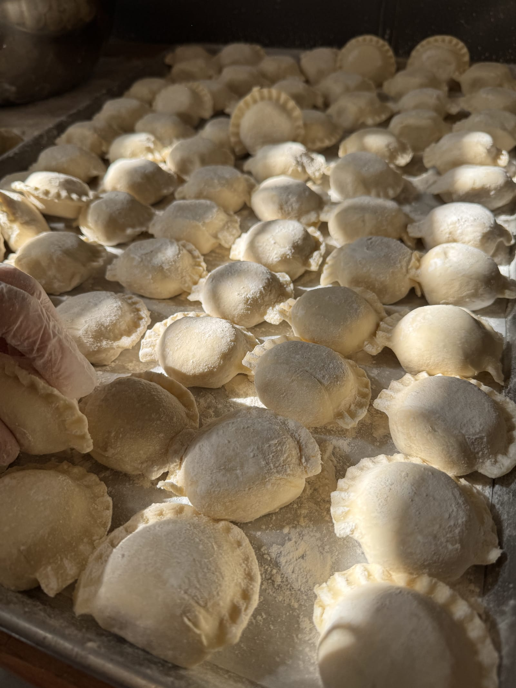

Polish bakery · Williamsburg, Brooklyn
Serving suggestion

CLEAR WINDOW
no ink, no white
no ink, no white
8
pierogi
Baked on North 8th since 1992.149 N 8th St · Brooklyn, NY
ZIPPER
SAFE AREA (keep words inside)